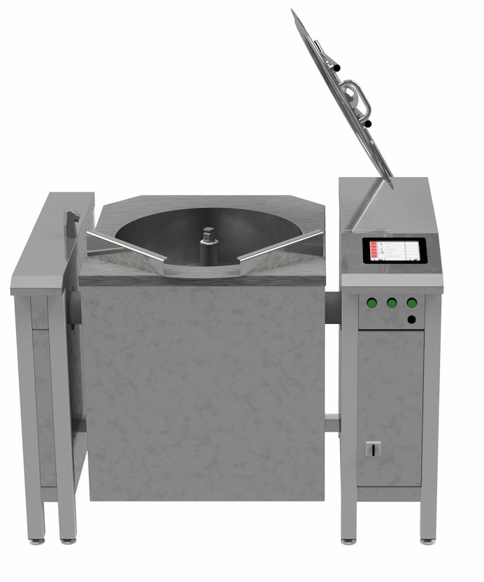

Velkommen! Hvad vil du vide mere om i dag?

Før du begynder at installere skal denne vejledning gennemlæses, da den indeholder vigtige informationer om sikkerheden når du installerer og anvender gryden. Grydens formål er at skulle anvendes til professionelt brug ved madlavning i professionelle køkkener og til lignende formål. Gryden må derfor ikke anvendes til andre formål Gryden er lavet, så der er taget størst mulig hensyn til miljøet. Både ved produktion, men også under anvendelse. Den er isoleret med Superwool på alle sider, for at minimere varmtab. Omrøreren har en energisparemotor klasse IE3. Gryden må ikke kasseres som almindeligt affald, men afleveres til genbrug.
Apparatet må kun monteres og demonteres af faglært. Gryden må kun monteres i et lokale med gulvafløb og det skal være indendørs. Vi anbefaler at etablere en gulvbrønd i forbindelse med installationen af gryden.
VIGTIGT! Gryden må ikke ud for over- eller underspænding! Når du skal montere tilslutningskablet, skal du demontere fronten og så skal kablet monteres direkte på forsyningsadskilleren. Apparatet SKAL jordforbindes, da det er af klasse I. Beskyttelse mod indirekte berøring skal etableres i den faste installation. Gryden kan have en lækstrøm > 10mA. Se mærkeplade for aktuel værdi. Når du skal montere forsyningskablet, skal det monteres direkte i klemmerne på forsyningsadskilleren. Husk at beskyttelseslederen skal laves lidt længere end de andre ledere, så det er den sidste der bliver revet ud, hvis der bliver trukket for hårdt i kablet. Fasefølgen skal være korrekt, hvis gryden er forsynet med dataopsamling (forbrugt kWh og forbrugt vand). Der må IKKE stå ‘false’ på displayet på kWh måleren. Det er en kraftig anbefaling at montere overspændingsbeskyttelse i den faste installation, så der undgås skader på elektronikenheden ved atmosfæriske udladninger og koblinger i højspændingsnettet. På bagsiden af apparatet findes der tilslutning for udligningsforbindelse.
Vandforsyning til både koldt og varmt vand tilsluttes bagerst i støttesøjlen. Varm vand anvendes kun i forbindelse med rensepistol. Forsyningen dimensioneres til at give ca. 30 L/min. Det maksimale vandtryk er 6 bar ~ 600kPa. I nærheden af gryden skal der installeres en stophane på begge forsyninger. Udløbstudens stråle kan reguleres ved at skifte indsatsen ud, så strålen uanset vandtryk altid vil ramme i gryden. Er gryden forsynet med spulepistol, så skal der monteres en rørafbryder i den faste installation. Det forhindre tilbagesugning ved svigt i vandforsyningen.
Når gryden skal placeres, skal der påtænkes nødvendig plade omkring den, sådan så låget kan åbnes helt. Derudover bør der være plads omkring gryden for at forhindre at man får fingrene i klemme, samt for nemmere plads til rengøring. Der skal også være plads til service og vedligeholdelse.
Hullerne opmærkes gennem foden, derefter bores hullerne som passer til M8 ekspansionshylster. Det er kun de to forreste ben på hver søjle, der er nødvendige at fastgøre.
HER SKAL VI SELV FINDE PÅ NOGET
Når gryden er installeret og tilsluttet skal der foretages en test inden ibrugtagning. For at kontrollere varmen indstilles temperaturen til f.eks. 100°C og der tændes for varmen. Herefter observer at det varmer.
For at teste omrøreren tændes der for den med f.eks. 50 o/min. og på program 1. Tænd for omrøreren med f.eks. 50 o/min og program 1. Herefter observeres det at omrøreren kører. Derefter reduceres omdrejningstallet til 20 o/min. Kontroller switch på lågarmen, og se om den påvirkes når låget åbnes. Når låget åbnes mere en 40-50 mm. så skal omrøreren stoppe. Hvis gryden har ‘SlowMix’ testes funktionen med åbent låg og omrøreren må kun køre så længe tasten trykkes.
For at teste vandet vælges antal liter og på skærmen og der tændes for vandet. Observer herefter at der tælles op på skærmen.
Til at teste kipfunktionen skal der trykkes på de respektive knapper. Når knappen slippes skal gryden stoppes og være i nederste og højeste stilling.
Når gryden er testet helt igennem og betjeningsvejledningen er læst så kan gryden tages i brug. Det første der skal gøres er at gøre den ren.
HER SKAL VI SELV FINDE PÅ NOGET
Hvis der ønskes at varme/tilberede produktet i f.eks. 30 min. ved en given temperatur, og efterfølgende holde produktet varm ved lavere temperatur, vælges opvarmning i felt 1. Derefter vælges omrøring i felt 2, hvis det ønskes, og tiden vælges i felt 3. I felt 4 vælges ønsket varmholdningstemperatur.
Hvis man ønsker at anvende omrøreren, så skal man trykke på tredje felt og vælge omrører på symbolet til højre. Herefter vil undermenuen dukke op og røremønstre og omdrejningstal kan vælges.
HER SKAL VI SELV FINDE PÅ NOGET
LHvis der ønskes en forsinket start af opvarmningen, så vælges der en tidsfunktion i første felt. Enten et klokkeslæt, hvis der skal startes på en given tid eller en given forsinket start i minutter eller timer. Derefter trykkes på næste felt og symbolet for opvarmning vælges. Så skifter skærmen til ‘Undermenu varme’, hvor der her indtastes de ønskede parametre og der afsluttes med krydset. Valget bekræftes ved at trykke på feltet igen.
Hvis indholdet ønskes at blive kølet ned, laves et køleprogram. Der skal altid angives en tid f.eks. angives køling til 10°C og 120 min., og køleforløbet vil stoppe når den første betingelse er opnået.
Hvis man ønsker et buzzer-signal når tiden er gået, så vælges dette i felt 4.